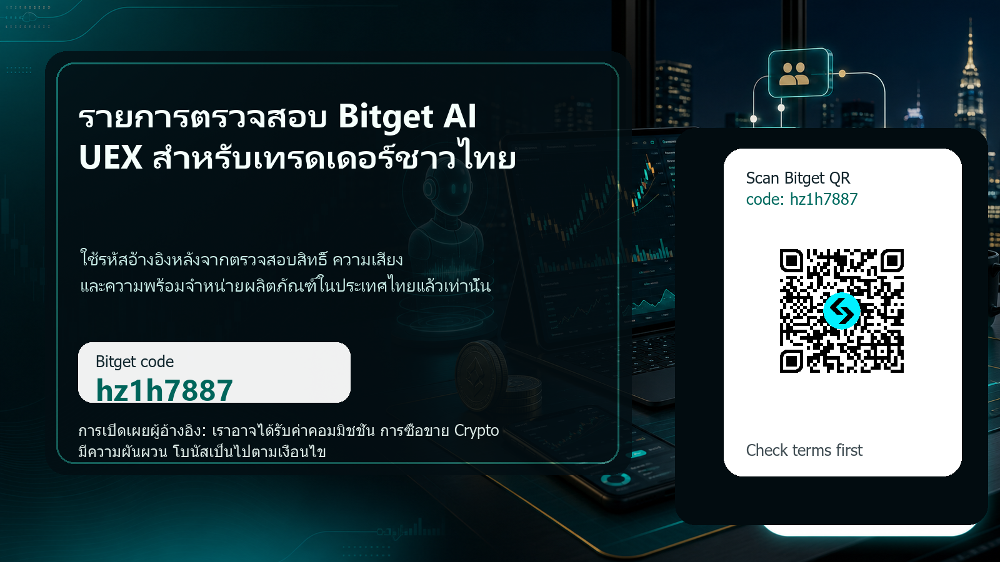

Bitget hz1h7887 คู่มือประเทศไทย

คู่มือนี้เขียนขึ้นสำหรับเทรดเดอร์ในประเทศไทยที่กำลังเปรียบเทียบการแลกเปลี่ยน crypto อยู่แล้ว ไม่ใช่สำหรับผู้ที่ต้องการรับโบนัสเพียงครั้งเดียวเท่านั้น รหัสอ้างอิง Bitget ที่ถูกติดตามคือ hz1h7887 เส้นทางแคมเปญปัจจุบันที่เราใช้คะแนนไปยัง Bitget ด้วย channelCode=2avs และ vipCode=hz1h7887 และรหัส QR ที่ใช้ในหน้านี้แก้ไขเป็น URL พันธมิตร Bitget ที่ได้รับอนุมัติ ก่อนที่จะใช้รหัส ให้ตรวจสอบว่าการลงทะเบียน Bitget, การซื้อขายแบบทันที, ฟิวเจอร์ส, การคัดลอกการซื้อขาย, ผลิตภัณฑ์หุ้นโทเค็น, บอท, รางวัลและงานโบนัสที่แน่นอนนั้นพร้อมใช้งานสำหรับบัญชี สถานที่ สถานะ KYC และโปรไฟล์ความเสี่ยงของคุณเองหรือไม่
เหตุผลที่ต้องดู Bitget ในตอนนี้ก็คือการแลกเปลี่ยนพยายามวางตำแหน่งตัวเองเป็น Universal Exchange หรือ UEX แทนที่จะเป็นสถานที่เข้ารหัสลับเพียงอย่างเดียว ในเอกสารอย่างเป็นทางการล่าสุดที่ได้รับการตรวจสอบเมื่อวันที่ 18 มิถุนายน 2569 Bitget เน้นย้ำถึงขั้นตอนการซื้อขายด้วย AI ผ่าน GetAgent Playbook ตลาดสินทรัพย์ในโลกแห่งความเป็นจริงที่มีโทเค็น ผลิตภัณฑ์ที่เกี่ยวข้องกับหุ้น การคัดลอกการซื้อขาย และเครื่องมือกลยุทธ์ การผสมผสานดังกล่าวอาจน่าสนใจสำหรับเทรดเดอร์ที่กระตือรือร้นซึ่งต้องการบัญชีเดียวเพื่อค้นคว้าคู่สกุลเงินดิจิทัล ผลิตภัณฑ์โทเค็นที่เชื่อมโยงกับหุ้น ความรู้สึกของตลาด และกลยุทธ์ที่มีโครงสร้าง มันไม่ใช่คำมั่นสัญญาถึงผลกำไร เป็นเหตุผลที่ต้องประเมินแพลตฟอร์มอย่างรอบคอบ
การเปิดเผยผู้อ้างอิง: หน้านี้มีลิงก์ผู้อ้างอิงและรหัส QR เราอาจได้รับค่าคอมมิชชั่นหากคุณลงทะเบียนหรือซื้อขายผ่านลิงก์ การซื้อขาย Crypto มีความเสี่ยงและราคามีความผันผวน เครื่องมือ AI, การคัดลอกการซื้อขาย, บอท, ฟิวเจอร์ส, เลเวอเรจ, หุ้นโทเค็น และแคมเปญโบนัส ล้วนแต่อาจสูญเสียเงินหรือไม่สามารถใช้งานได้ในบางภูมิภาค หน้านี้เป็นเพียงเนื้อหาด้านการตลาดเพื่อการศึกษา ไม่ใช่คำแนะนำทางการเงิน กฎหมาย ภาษี หรือการลงทุน
เหตุใดมุม Bitget จึงสามารถดึงดูดเทรดเดอร์ที่จริงจังในประเทศไทยได้
หน้าอ้างอิงที่ไม่รัดกุมบอกว่ามีโบนัสอยู่เท่านั้น ที่สามารถสร้างคลิกได้ แต่มักจะดึงดูดผู้ใช้ที่ลงทะเบียน มองหารางวัลฟรี และหายไป หน้าที่แข็งแกร่งกว่าจะอธิบายว่าทำไมเทรดเดอร์จึงอาจใช้บัญชีต่อไปหลังจากวันแรก สำหรับ Bitget มุมที่คงทนมากขึ้นคือขั้นตอนการซื้อขายที่กระตือรือร้น: ค้นคว้าตลาด เปรียบเทียบสภาพคล่อง ทดสอบกลยุทธ์ ควบคุมขนาดตำแหน่ง ทำความเข้าใจค่าธรรมเนียม ตรวจสอบคุณสมบัติ จากนั้นซื้อขายเฉพาะเมื่อการตั้งค่ายังคงสมเหตุสมผล
ประเทศไทยมีวัฒนธรรมการค้าปลีกขนาดใหญ่และมีผู้ชมสกุลเงินดิจิทัลเป็นอันดับแรกบนมือถือ แต่ก็เป็นตลาดสินทรัพย์ดิจิทัลที่ได้รับการควบคุมเช่นกัน ก.ล.ต. ของไทยอธิบายว่าการแลกเปลี่ยนสินทรัพย์ดิจิทัลเป็นธุรกิจที่จับคู่คำสั่งซื้อหรืออำนวยความสะดวกในการซื้อขายสินทรัพย์ดิจิทัล และผู้ใช้ควรเข้าใจว่ากฎเกณฑ์ท้องถิ่น สถานะของแพลตฟอร์ม และการคุ้มครองนักลงทุนมีความสำคัญ นั่นคือเหตุผลที่คู่มือนี้ใช้ถ้อยคำที่ระมัดระวัง ไม่ได้บอกผู้อ่านชาวไทยว่าผลิตภัณฑ์ Bitget ทุกรายการจะพร้อมใช้งานโดยอัตโนมัติ โดยจะบอกวิธีการตรวจสอบก่อนการฝากหรือการใช้เลเวอเรจ
ผู้อ่านเป้าหมายคือเทรดเดอร์ที่กระตือรือร้นซึ่งค้นหาคำศัพท์เป็นภาษาไทย เช่น รหัสอ้างอิง Bitget, รหัสเชิญ Bitget, รหัสโปรโมชั่น Bitget, โบนัส Bitget, การคัดลอกการซื้อขาย, การซื้อขายด้วย AI, หุ้นโทเค็น, ฟิวเจอร์ส crypto และส่วนลดค่าธรรมเนียม หน้านี้ตอบจุดประสงค์ในการค้นหา แต่ยังกรองผู้ใช้ผิดออกด้วย: ใครก็ตามที่ไม่สามารถทำ KYC ให้เสร็จสิ้น ไม่สามารถตรวจสอบความพร้อมของผลิตภัณฑ์ ถูกล่อลวงให้ซื้อขายเกินเพื่อรับโบนัส หรือเชื่อว่าการคัดลอกการซื้อขายและ AI สามารถขจัดความเสี่ยงได้
มีอะไรใหม่ที่ Bitget ซึ่งมีความสำคัญในเดือนมิถุนายน 2569
มุมผลิตภัณฑ์ที่สดใหม่ที่สุดคือ GetAgent Playbook Bitget อธิบายว่ามันเป็นเลเยอร์เวิร์กโฟลว์ที่มีโครงสร้างภายใน GetAgent และ Bitget AI แทนที่จะขอให้ผู้ใช้สร้างทุกการแจ้งเตือนหรือกลยุทธ์จากหน้าจอว่างเปล่า Playbook นำเสนอตรรกะกลยุทธ์ที่นำมาใช้ซ้ำได้ซึ่งเทรดเดอร์สามารถตรวจสอบ ปรับใช้ และทำความเข้าใจได้ ส่วนที่มีประโยชน์สำหรับช่องทางการอ้างอิงไม่ใช่คำว่า AI ที่เกินจริง ส่วนที่มีประโยชน์คือเทรดเดอร์ที่กระตือรือร้นอาจต้องการเครื่องมือที่อธิบายบริบทของตลาด วัตถุประสงค์ของกลยุทธ์ และสภาพแวดล้อมความเสี่ยงก่อนดำเนินการ
Bitget ยังคงผลักดัน UEX ซึ่งเป็นแนวคิด Universal Exchange ต่อไป ในภาษาธรรมดา UEX พยายามรวมการซื้อขาย crypto เข้ากับตลาดอื่น ๆ เช่น หุ้นโทเค็น และอนุพันธ์ของสินทรัพย์ในโลกแห่งความเป็นจริง รายงานสภาพคล่องของ RWA อย่างเป็นทางการกับ Block Scholes กล่าวว่าตลาดตราสารทุนและสินค้าโภคภัณฑ์แบบโทเค็นบน Bitget ยังคงเติบโตอย่างต่อเนื่องในปี 2569 สำหรับเทรดเดอร์ชาวไทยที่เฝ้าดูหุ้นสหรัฐฯ ทองคำ สกุลเงินดิจิทัล และสภาพคล่องของดอลลาร์อยู่แล้ว แผนที่ผลิตภัณฑ์ที่กว้างขึ้นนั้นสามารถทำให้ Bitget คุ้มค่าเมื่อเปรียบเทียบกับการแลกเปลี่ยนอื่น ๆ
การอัปเดตที่เป็นประโยชน์อีกประการหนึ่งคือหุ้นของ Bitget และการศึกษาหุ้นแบบถาวร คู่มือปี 2026 ของ Bitget อธิบายการเปิดเผยหุ้นในสหรัฐฯ ผ่านหุ้นโทเค็นและฟิวเจอร์สหุ้นที่มีอัตรากำไรขั้นต้นของ USDT พร้อมตัวอย่างเช่น Tesla, Apple, Nvidia, Amazon, Meta และผลิตภัณฑ์ที่เกี่ยวข้องกับ Google ตราสารเหล่านี้ไม่เหมือนกับการเป็นเจ้าของหุ้นแบบดั้งเดิมผ่านนายหน้าท้องถิ่นที่ได้รับการควบคุม เป็นผลิตภัณฑ์ที่มีสกุลเงินดิจิทัลโดยมีค่าธรรมเนียม สภาพคล่อง คู่ค้า และการพิจารณาความพร้อมในภูมิภาคของตัวเอง ความแตกต่างนั้นควรชัดเจนก่อนที่เทรดเดอร์จะแตะต้องพวกเขา
มีสิทธิ์ก่อน: ผู้ใช้ชาวไทยควรตรวจสอบก่อนใช้ลิงก์
จุดตรวจสอบการแปลงแรกไม่ใช่ปุ่มฝากเงิน มันเป็นคุณสมบัติ หากคุณอยู่ในประเทศไทย ให้เปิด Bitget จากอุปกรณ์ของคุณและยืนยันสิ่งที่แพลตฟอร์มแสดงสำหรับบัญชีของคุณ ตรวจสอบว่ามีการลงทะเบียนหรือไม่ สามารถกรอก KYC ด้วยเอกสารของคุณได้หรือไม่ มองเห็นผลิตภัณฑ์ที่คุณต้องการหรือไม่ และการเปิดเผยความเสี่ยงและข้อกำหนดเหมาะสมกับสถานการณ์ของคุณหรือไม่ หาก Bitget หรือผลิตภัณฑ์เฉพาะไม่พร้อมใช้งานสำหรับคุณ อย่าพยายามข้ามข้อจำกัดด้วย VPN ข้อมูลที่อยู่อาศัยปลอม หรือเอกสารของบุคคลอื่น
ด่านที่สองคือกฎระเบียบท้องถิ่น สำนักงาน ก.ล.ต. เก็บรักษาข้อมูลเกี่ยวกับธุรกิจสินทรัพย์ดิจิทัลและกรอบกฎหมายสำหรับการแลกเปลี่ยน นายหน้า และตัวแทนจำหน่าย นั่นไม่ได้ตอบคำถามแพลตฟอร์มข้ามพรมแดนทุกข้อโดยอัตโนมัติสำหรับผู้ใช้แต่ละราย แต่จะบอกผู้ค้าว่าเหตุใดการปฏิบัติตามกฎระเบียบในท้องถิ่นจึงมีความสำคัญ หากคุณไม่แน่ใจว่าผลิตภัณฑ์นั้นได้รับอนุญาตสำหรับคุณหรือไม่ ให้ถือว่าความไม่แน่นอนนั้นเป็นสัญญาณหยุดจนกว่าคุณจะได้ตรวจสอบข้อกำหนดของแพลตฟอร์มอย่างเป็นทางการ และหากจำเป็น ให้ปฏิบัติตามคำแนะนำจากผู้เชี่ยวชาญในพื้นที่
ด่านที่สามคือภาษีและการรายงาน การซื้อขายสกุลเงินดิจิทัล ผลิตภัณฑ์โทเค็น กำไรจากอนุพันธ์ การสูญเสีย การโอน และผลตอบแทนอาจมีผลกระทบทางภาษี หน้านี้ไม่ได้ให้คำแนะนำด้านภาษี กฎการปฏิบัตินั้นง่ายมาก: หากคุณวางแผนที่จะซื้อขายอย่างจริงจัง ให้เก็บบันทึกตั้งแต่เริ่มต้น บันทึกประวัติการซื้อขาย บันทึกการฝากและถอน บันทึกค่าธรรมเนียมการระดมทุน ประวัติงานโบนัส และเงื่อนไขแคมเปญการอ้างอิง เทรดเดอร์ที่จริงจังจะสร้างวินัยในการรายงานก่อนที่บัญชีจะซับซ้อน
วิธีใช้รหัสโดยไม่เปลี่ยนโบนัสให้เป็นข้อผิดพลาดในการซื้อขาย
หากคุณตัดสินใจว่า Bitget เหมาะกับคุณ ให้ใช้ลิงก์อ้างอิงในหน้านี้หรือสแกนโค้ด QR รหัสติดตามคือ hz1h7887 หลังจากเข้าสู่ Bitget แล้ว ให้ตรวจสอบว่ารหัสหรือการระบุแหล่งที่มาของแคมเปญมองเห็นได้ก่อนที่คุณจะฝากเงิน หากคุณไม่สามารถยืนยันรหัสอ้างอิงหรือกฎของศูนย์รางวัลได้ ให้หยุดชั่วคราวและติดต่อฝ่ายสนับสนุนของ Bitget แทนที่จะคิดว่ารางวัลจะปรากฏในภายหลัง
ภาษาของข้อเสนอในฐานข้อมูลแคมเปญที่ใช้ร่วมกันกล่าวถึงโบนัสสูงถึง 6,200 USDT และเงินคืนค่าธรรมเนียม 20 เปอร์เซ็นต์ แต่คำพูดและคุณสมบัติเป็นสิ่งสำคัญ รางวัลอาจขึ้นอยู่กับสถานะผู้ใช้ใหม่, KYC, ขนาดเงินฝาก, ปริมาณการซื้อขาย, ภูมิภาค, ระยะเวลาแคมเปญ, ประเภทผลิตภัณฑ์ และกฎการแลกเปลี่ยน อย่าซื้อขายปริมาณพิเศษเพียงเพื่อปลดล็อคโบนัส หากการซื้อขายนั้นไม่ได้เป็นส่วนหนึ่งของแผนของคุณ โบนัสคือส่วนลดหรือสิ่งจูงใจ ไม่ใช่กลยุทธ์
สำหรับเทรดเดอร์ที่กระตือรือร้น การใช้รหัสอ้างอิงที่ดีกว่าคือวินัยด้านต้นทุน หากบัญชีของคุณมีเงินคืนค่าธรรมเนียมหรือบัตรกำนัล ให้ถือเป็นวิธีหนึ่งในการลดความขัดแย้งในขณะที่คุณทดสอบแพลตฟอร์ม วัดค่าสเปรด สลิปเพจ ค่าธรรมเนียมผู้สร้างและผู้รับ เงินทุน ต้นทุนการยืม และต้นทุนการถอน หากประสบการณ์การซื้อขายเต็มรูปแบบไม่สามารถแข่งขันได้หลังจากการตรวจสอบเหล่านั้น โบนัสเพียงอย่างเดียวก็ไม่เพียงพอที่จะทำให้อยู่ต่อ
Bitget referral link - code hz1h7887

QR target verified locally: https://partner.bitget.com/bg/bonusok
GetAgent Playbook: เทรดเดอร์ที่กระตือรือร้นควรประเมิน AI อย่างไร
เครื่องมือการซื้อขายแบบ AI จะมีประโยชน์เมื่อจัดโครงสร้างการคิด สิ่งเหล่านี้เป็นอันตรายเมื่อเทรดเดอร์ปฏิบัติต่อพวกเขาเหมือนเป็นพยากรณ์ ด้วย GetAgent Playbook คำถามแรกไม่ใช่ว่าเครื่องมือสามารถสร้างแนวคิดทางการค้าได้หรือไม่ คำถามแรกคือคุณสามารถเข้าใจสมมติฐานเบื้องหลังขั้นตอนการทำงานได้หรือไม่ กลยุทธ์นี้ออกแบบมาเพื่อสภาวะตลาดแบบใด เป็นไปตามแนวโน้ม การพลิกกลับเฉลี่ย ขับเคลื่อนด้วยเหตุการณ์ หรืออิงตามความผันผวนหรือไม่? จะเกิดอะไรขึ้นเมื่อเงื่อนไขเปลี่ยนแปลง?
ก่อนที่จะใช้ขั้นตอนการทำงานที่ได้รับความช่วยเหลือจาก AI ให้จดบันทึกแนวป้องกันของคุณเอง กำหนดเปอร์เซ็นต์บัญชีสูงสุดที่คุณยินดีเสี่ยง เลเวอเรจสูงสุดที่คุณจะใช้ ตรรกะการหยุดการขาดทุน จุดที่เป็นโมฆะ ข้อมูลตลาดที่จะทำให้คุณข้ามการซื้อขาย และเวลาที่คุณจะตรวจสอบประสิทธิภาพ หากเอาต์พุต AI ไม่พอดีกับราวกั้นเหล่านั้น คุณควรเพิกเฉยต่อเอาต์พุตแทนที่จะปรับขีดจำกัดความเสี่ยงหลังจากที่คุณรู้สึกตื่นเต้น
กรณีการใช้งาน AI ที่มีประโยชน์ที่สุดสำหรับผู้ใช้ Bitget ใหม่ไม่ใช่ระบบอัตโนมัติที่มองไม่เห็น เป็นการทบทวนก่อนการค้าขาย ใช้ AI เพื่อจัดระเบียบรายการตรวจสอบ เปรียบเทียบสถานการณ์ สรุปข่าว ระบุความเสี่ยงที่คุณลืม และสร้างคำถามเพื่อตรวจสอบ จากนั้นจึงตัดสินใจซื้อขายด้วยตัวเอง กรอบนั้นดึงดูดผู้อ้างอิงที่ดีกว่าเพราะดึงดูดเทรดเดอร์ที่ต้องการการปรับปรุงกระบวนการ ไม่ใช่เวทย์มนตร์
คัดลอกการซื้อขาย: เลือกการควบคุมความเสี่ยงก่อนเลือกเทรดเดอร์
Bitget เป็นที่รู้จักอย่างกว้างขวางในเรื่องของการคัดลอกการซื้อขาย และนั่นอาจเป็นช่องทางอ้างอิงที่แข็งแกร่งสำหรับผู้ใช้ชาวไทยที่ต้องการการซื้อขายทางโซเชียล แต่การคัดลอกการซื้อขายไม่ใช่รายได้แบบพาสซีฟ คุณยังคงได้สัมผัสกับกลยุทธ์ของเทรดเดอร์หลัก เลเวอเรจ การขาดทุน ระยะเวลาของตลาด ค่าธรรมเนียม และพฤติกรรมในช่วงที่เกิดความเครียด ผลตอบแทนที่สูงเมื่อเร็วๆ นี้อาจซ่อนกลยุทธ์ที่ยังไม่เป็นไปตามสภาวะตลาดที่ทำลายกลยุทธ์นั้นได้
ก่อนที่จะคัดลอกใครก็ตาม ให้ตรวจสอบอย่างน้อยหกสิ่ง: การขาดทุนสูงสุด ความถี่ในการซื้อขาย เวลาถือครองเฉลี่ย เลเวอเรจ การกระจุกตัวของตำแหน่ง และพฤติกรรมในช่วงระยะเวลาที่สูญเสีย มองหาความสม่ำเสมอ ไม่ใช่แค่ผลตอบแทนที่ยิ่งใหญ่ที่สุด เทรดเดอร์ที่เอาตัวรอดจากระบบการตลาดที่แตกต่างกันหลายระบบโดยมีการควบคุมการขาดทุนมักจะน่าสนใจมากกว่าเทรดเดอร์ที่มีเดือนที่น่าประทับใจเพียงเดือนเดียว
กำหนดขีดจำกัดการคัดลอกของคุณเอง เริ่มต้นทีละน้อย จำกัดจำนวนสำเนาสูงสุด กำหนดเงื่อนไขหยุดการคัดลอก และทบทวนกลยุทธ์การคัดลอกทุกสัปดาห์ หากผู้นำเทรดเดอร์เปลี่ยนพฤติกรรม เพิ่มเลเวอเรจ หรือเริ่มแก้แค้นการซื้อขายหลังจากขาดทุน ระบบของคุณควรให้คุณหยุดการคัดลอกได้อย่างรวดเร็ว เอกสารอ้างอิงที่อธิบายเรื่องนี้อย่างชัดเจนสามารถดึงดูดผู้ใช้ที่ทำการซื้อขายนานขึ้น เนื่องจากมีโอกาสน้อยที่จะระเบิดในสัปดาห์แรก
บอทและเครื่องมือกลยุทธ์: สร้างกฎอัตโนมัติ ไม่ใช่ความหวัง
บอทการซื้อขายสามารถช่วยให้เทรดเดอร์ที่ใช้งานอยู่ดำเนินการตามแผนที่กำหนดไว้ล่วงหน้าได้ แต่ก็สามารถตัดสินใจผิดพลาดได้โดยอัตโนมัติเช่นกัน คำถามแรกเกี่ยวกับบอทคือ: บอทนี้จำเป็นต้องทำงานภายใต้สภาวะตลาดแบบใด? บอทกริดอาจมีพฤติกรรมแตกต่างออกไปในตลาดด้านข้างมากกว่าในแนวโน้มที่รุนแรง วิธีการแบบ DCA อาจสร้างการเปิดเผยได้เร็วกว่าที่คาดไว้ บอทฟิวเจอร์สเพิ่มเลเวอเรจ การชำระบัญชี และความเสี่ยงด้านเงินทุน หากคุณไม่สามารถอธิบายโหมดความล้มเหลวของบอทได้ คุณไม่ควรรันมันด้วยขนาดที่มีความหมาย
สำหรับเครื่องมือกลยุทธ์ Bitget ให้สร้างรายการตรวจสอบก่อนการเปิดตัว กำหนดคู่, กรอบเวลา, ขนาดตำแหน่ง, การขาดทุนสูงสุด, ตรรกะการทำกำไร, เงื่อนไขการหยุด, กฎการปรับสมดุล, ความถี่ในการทบทวน และแผนการออกฉุกเฉิน วิ่งเล็กๆก่อน เปรียบเทียบค่าธรรมเนียมที่คาดหวังกับผลกำไรที่น่าจะเป็นไปได้ อย่าปล่อยบอททิ้งไว้โดยไม่มีใครดูแลในช่วงข่าวสำคัญ เหตุการณ์การแลกเปลี่ยน ช่องว่างทางการตลาดที่รุนแรง หรือช่วงเวลาที่คุณไม่สามารถเข้าถึงบัญชีของคุณได้
เหตุผล SEO ที่จะรวมบอทไว้ในคู่มือภาษาไทยนี้เป็นเรื่องง่าย: เทรดเดอร์ที่กระตือรือร้นค้นหาแนวคิดระบบอัตโนมัติที่ใช้งานได้จริง เหตุผลในการแปลงนั้นง่ายมาก: เทรดเดอร์ที่เริ่มต้นด้วยรายการตรวจสอบบอทที่รับผิดชอบ มีแนวโน้มที่จะยังคงใช้งานอยู่มากกว่าผู้ใช้ที่เปิดบอทที่มีเลเวอเรจขนาดใหญ่ เนื่องจากแคมเปญรางวัลทำให้รู้สึกว่าเป็นเรื่องเร่งด่วน
UEX หุ้นโทเค็น และผลิตภัณฑ์ RWA: มีประโยชน์ แต่ไม่ง่าย
การส่งข้อความ UEX และ RWA ของ Bitget นั้นน่าดึงดูดใจในประเทศไทย เนื่องจากเทรดเดอร์จำนวนมากติดตามทั้ง crypto และหุ้นทั่วโลกอยู่แล้ว แนวคิดในการเข้าถึงคู่สกุลเงินดิจิทัล การเปิดเผยหุ้นแบบโทเค็น และตลาดที่เชื่อมโยงกับสินค้าโภคภัณฑ์ในแอปเดียวฟังดูสะดวกดี อย่างไรก็ตาม ความสะดวกสบายไม่ควรซ่อนความแตกต่างของผลิตภัณฑ์ ผลิตภัณฑ์หุ้นโทเค็นและฟิวเจอร์สหุ้นถาวรไม่เหมือนกันกับการซื้อหุ้นจากนายหน้าซื้อขายหุ้นแบบดั้งเดิม
เมื่อประเมินหุ้นโทเค็นหรือผลิตภัณฑ์ถาวรของหุ้น ให้ตรวจสอบชั่วโมงการซื้อขาย สภาพคล่อง ดัชนีหรือความเสี่ยงอ้างอิง ค่าธรรมเนียม เงินทุน กฎมาร์จิ้น การจ่ายเงินปันผล การจัดการการดำเนินการขององค์กร และผลิตภัณฑ์ดังกล่าวมีจำหน่ายในภูมิภาคของคุณหรือไม่ นอกจากนี้ โปรดตรวจสอบสิ่งที่เกิดขึ้นระหว่างกิจกรรมในตลาดสหรัฐฯ การประกาศผลประกอบการ และช่วงที่มีสภาพคล่องต่ำ ผลิตภัณฑ์อาจมีจำหน่ายในทางเทคนิคแต่ยังคงไม่เหมาะสมสำหรับการยอมรับความเสี่ยงของคุณ
โอกาสของเทรดเดอร์ที่กระตือรือร้นคือ Bitget อาจกลายเป็นสถานที่วิจัยและการดำเนินการสำหรับผู้ที่เปรียบเทียบสกุลเงินดิจิทัลกับเรื่องเล่าระดับมหภาคและหุ้นอยู่แล้ว ข้อความที่รับผิดชอบคือผลิตภัณฑ์เหล่านี้จำเป็นต้องอ่านเพิ่มเติม หากผู้อ่านชาวไทยกำลังมองหาบัญชี crypto บัญชีแรกที่เรียบง่ายเป็นหลัก การซื้อขายแบบทันทีและธุรกรรมทดสอบเล็กๆ น้อยๆ อาจเหมาะสมกว่าการกระโดดเข้าสู่หุ้นโทเค็น
แผนสัปดาห์แรกที่ใช้งานได้จริงหลังการลงทะเบียน
วันแรกควรเป็นการตรวจสอบ ไม่ใช่การซื้อขาย ยืนยันว่าใช้รหัสอ้างอิง กรอก KYC ผ่าน Bitget อย่างเป็นทางการเท่านั้น อ่านกฎของศูนย์รางวัล เปิดการรักษาความปลอดภัยของบัญชี และบันทึกเงื่อนไขแคมเปญที่คุณวางแผนจะใช้ เพิ่มการตรวจสอบสิทธิ์แบบสองปัจจัย การควบคุมที่อยู่การถอน และรหัสป้องกันฟิชชิ่ง หากมี งานรักษาความปลอดภัยนั้นน่าเบื่อ ซึ่งเป็นเหตุผลว่าทำไมมันจึงควรเกิดขึ้นก่อนการฝากเงินครั้งแรก
วันที่สองควรเป็นการทดสอบแพลตฟอร์ม ฝากเงินจำนวนเล็กน้อยที่คุณสามารถยอมสูญเสียได้ ทดสอบคำสั่งสปอตขนาดเล็ก เส้นทางการถอนเงิน และการแสดงค่าธรรมเนียม เรียนรู้ว่าประวัติการสั่งซื้อ เงินทุน สถานะรางวัล และตั๋วสนับสนุนอยู่ที่ใด หากคุณวางแผนที่จะใช้การคัดลอกการซื้อขาย ใช้เวลาวันนี้เพื่อดูโปรไฟล์เทรดเดอร์ชั้นนำ แทนที่จะคัดลอกทันที
วันที่สามถึงเจ็ดควรได้รับการควบคุมการทดลอง เลือกหนึ่งผลิตภัณฑ์เท่านั้น: สปอต, คัดลอกการซื้อขาย, บอท หรือการทดสอบกลยุทธ์ขนาดเล็กที่ไม่ใช้เลเวอเรจ เก็บบันทึก บันทึกว่าทำไมคุณถึงเข้า สถานที่ที่คุณออก ค่าธรรมเนียมที่จ่ายไป และสิ่งที่คุณได้เรียนรู้ หากคุณไม่สามารถอธิบายสัปดาห์แรกเป็นลายลักษณ์อักษรได้ แสดงว่าคุณยังไม่พร้อมที่จะขยายขนาด
ใครควรหลีกเลี่ยงการใช้ลิงก์อ้างอิงนี้ตอนนี้
อย่าใช้ลิงก์นี้หาก Bitget ไม่พร้อมใช้งานสำหรับคุณ หากคุณไม่สามารถดำเนินการ KYC ได้โดยสุจริต หากกฎท้องถิ่นไม่ชัดเจนสำหรับผลิตภัณฑ์ที่คุณต้องการ หรือหากคุณวางแผนที่จะใช้เลเวอเรจโดยไม่เข้าใจการชำระบัญชี นอกจากนี้ ให้หลีกเลี่ยงลิงก์หากแผนเดียวของคุณคือการแลกเปลี่ยนปริมาณเพื่อรับรางวัล รางวัลสามารถเปลี่ยนแปลง หมดอายุ ถูกจำกัด หรือต้องมีเงื่อนไขที่ไม่คุ้มกับความเสี่ยง
คุณควรรอหากคุณกำลังซื้อขายโดยใช้อารมณ์ หากการสูญเสียล่าสุดทำให้คุณต้องการฟื้นตัวอย่างรวดเร็ว บัญชีแลกเปลี่ยนใหม่อาจกลายเป็นที่ใหม่ในการทำผิดพลาดแบบเดียวกัน เวลาที่เหมาะสมในการเปิดบัญชีซื้อขายที่ใช้งานอยู่คือเมื่อคุณมีกระบวนการเป็นลายลักษณ์อักษร ไม่ใช่เมื่อคุณพยายามซ่อมแซมการซื้อขายที่ไม่ดี
สุดท้ายนี้ หลีกเลี่ยงการใช้บัญชีแลกเปลี่ยน crypto สำหรับเงินที่คุณต้องการเช่า การชำระหนี้ ความต้องการของครอบครัว หรือการออมฉุกเฉิน ตลาดที่ผันผวนสามารถเคลื่อนไหวเร็วกว่าที่คาดไว้ และเครื่องมือการแลกเปลี่ยนไม่สามารถขจัดความเสี่ยงด้านตลาดได้ คู่มือการอ้างอิงที่เป็นประโยชน์ควรระบุสิ่งนี้อย่างชัดเจน แม้ว่าจะลด Conversion ในทันทีก็ตาม
คำถามที่พบบ่อย
รหัสอ้างอิง Bitget ในหน้านี้คืออะไร? รหัสคือ hz1h7887 ใช้ลิงก์หรือรหัส QR จากนั้นตรวจสอบรหัสหรือการระบุแหล่งที่มาของแคมเปญก่อนทำการฝากเงิน
รับประกันโบนัสหรือไม่? ไม่ แคมเปญอาจกล่าวถึงรางวัลเป็นจำนวนสูงสุด แต่รางวัลขึ้นอยู่กับคุณสมบัติ KYC ภูมิภาค สถานะบัญชี เงินฝาก กิจกรรมการซื้อขาย ระยะเวลาแคมเปญ และกฎของ Bitget
ผู้ใช้ชาวไทยสามารถใช้ผลิตภัณฑ์ Bitget ทุกชนิดได้หรือไม่? อย่าทึกทักเอาเองว่า. ตรวจสอบบัญชี หน้าผลิตภัณฑ์ ข้อกำหนดอย่างเป็นทางการ และกฎท้องถิ่น ความพร้อมจำหน่ายอาจแตกต่างกันไปตามภูมิภาคและประเภทผลิตภัณฑ์
GetAgent Playbook เป็นบริการสัญญาณการซื้อขายหรือไม่? ควรคิดว่ามันเป็นเลเยอร์เวิร์กโฟลว์ AI ที่มีโครงสร้างดีกว่า สามารถช่วยจัดระเบียบตรรกะของกลยุทธ์ได้ แต่ไม่รับประกันผลกำไรและไม่ควรแทนที่การบริหารความเสี่ยง
Copy Trading ปลอดภัยกว่าการซื้อขายด้วยตนเองหรือไม่? ไม่โดยอัตโนมัติ การคัดลอกการซื้อขายจะโอนการตัดสินใจไปยังเทรดเดอร์รายอื่น แต่คุณยังคงมีความเสี่ยง ใช้ขีดจำกัดการคัดลอก การตรวจสอบการเบิกจ่าย และกฎการหยุดการคัดลอก
ทำไมต้องมีการยืนยันรหัส QR? รหัส QR สามารถใช้ในทางที่ผิดหรือถูกแทนที่ได้ รูปภาพ QR ที่ใช้สำหรับเนื้อหานี้ได้รับการถอดรหัสในเครื่องก่อนที่จะเผยแพร่และชี้ไปยัง URL พันธมิตร Bitget ที่ได้รับอนุมัติสำหรับการระบุแหล่งที่มาของแคมเปญเดียวกัน
รายการตรวจสอบสุดท้ายก่อนที่คุณจะคลิก
ตรวจสอบคุณสมบัติท้องถิ่นของคุณในประเทศไทย ยืนยันว่ามีการใช้รหัสอ้างอิง hz1h7887 แล้ว อ่านกฎของศูนย์รางวัลและจำไว้ว่าโบนัสนั้นมีเงื่อนไข เลือกหนึ่งผลิตภัณฑ์เพื่อทดสอบก่อน เริ่มเล็กๆ. เก็บบันทึก หลีกเลี่ยงการใช้เลเวอเรจจนกว่าคุณจะอธิบายการชำระบัญชี เงินทุน และขีดจำกัดความเสี่ยงได้ ใช้ AI เป็นผู้ช่วยในการตรวจสอบ คัดลอกการซื้อขายเป็นการจัดสรรที่ได้รับการควบคุม และใช้บอทเป็นการดำเนินการตามกฎ ไม่ใช่ทางลัดไปสู่การรับประกันรายได้
หากการตรวจสอบเหล่านั้นยังสมเหตุสมผล คุณสามารถใช้เส้นทางการอ้างอิงอย่างเป็นทางการของ Bitget ด้านล่าง หากการตรวจสอบใดล้มเหลว การตัดสินใจที่ดีกว่าคือรอ เทรดเดอร์ที่ดีจะปกป้องทางเลือก และบางครั้งการซื้อขายที่ดีที่สุดอาจไม่ได้เปิดบัญชีในวันนี้
ตรวจสอบแหล่งที่มาอย่างเป็นทางการแล้ว
ตรวจสอบล่าสุดเมื่อวันที่ 18 มิถุนายน 2569 ตรวจสอบเงื่อนไขของ Bitget ความพร้อมของผลิตภัณฑ์ และคุณสมบัติของประเทศไทยอีกครั้งก่อนทำการฝากหรือซื้อขาย